Lecture 8: Evaluating LLMs
Video blocked (ad-blocker or local file mode).
Watch on YouTubeVideo not loading? Watch on YouTube
Original lecture. Human ratings, rule-based metrics, LLM-as-a-judge, benchmarks, and agent evaluation.
The problem: what does “evaluate the LLM” mean
“Evaluate the LLM” can mean latency, price, or uptime. This lecture means one thing: output quality. How good is the actual response?
The difficulty is structural. The LLM outputs free-form text: natural language, code, math. No universal metric covers all of it. The lecture climbs a ladder of approximations. Each rung fixes the previous rung’s flaw and introduces a new one.
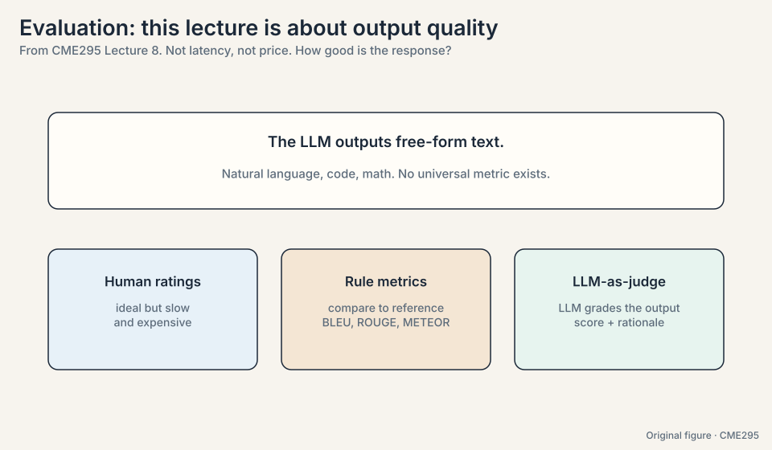
The key question
Text has no single right answer. How do you score a model when the output space is infinite and every answer differs?
Rung 1: human ratings, the unaffordable ideal
The ideal: a human rates every output. Collect the ratings, quantify the model. Two problems kill it.
Subjectivity. “What birthday gift should I get?” answered with “a teddy bear is almost always a sweet gift” splits raters: one calls it useful, another calls it vague (08:22). The fix is inter-rater agreement: measure how consistently raters judge, with clear guidelines and alignment sessions when they drift.
Cost and speed. Rating a thousand outputs takes days and real money. The ideal does not scale.
The naive agreement metric is the agreement rate: the fraction of times two raters give the same verdict (09:18). Watch it lie. If rater A says “good” with probability P_A and rater B with P_B, independently, chance agreement is:
P(agree) = P_A * P_B + (1 - P_A) * (1 - P_B)
Two scenarios on the same observed 85% agreement:
scenario 1: P_A = P_B = 0.5 (balanced) chance agreement = 0.25 + 0.25 = 0.50 observed 0.85 vs chance 0.50: real signal. scenario 2: P_A = P_B = 0.9 (almost everything is "good") chance agreement = 0.81 + 0.01 = 0.82 observed 0.85 vs chance 0.82: barely above random guessing.
Same 85%, opposite conclusions. A raw percentage cannot tell them apart. The fix is chance-corrected metrics: Cohen’s kappa for two raters (14:56), Fleiss’s kappa for many, Krippendorff’s alpha when data is missing (16:30). Cohen’s kappa is (observed - chance) / (1 - chance): scenario 1 gives (0.85 - 0.50) / 0.50 = 0.70. Scenario 2 gives (0.85 - 0.82) / 0.18 = 0.17. Positive means better than chance. That is the health metric to track. Low kappa usually means the rubric is ambiguous, not that the raters are careless: hold an agreement session and fix the rubric.
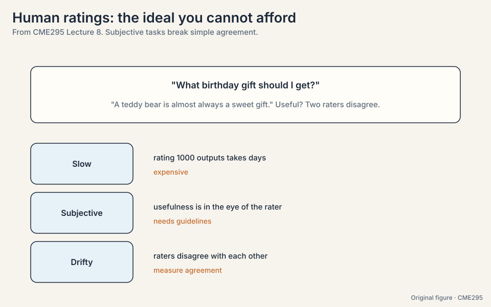
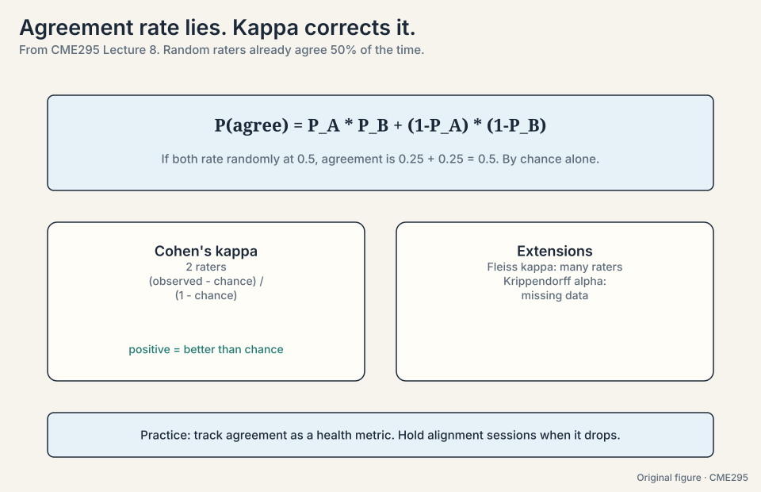
Subchapter: the rater pipeline
Good human ratings are manufactured, not collected:
- Write the rubric. One page: what counts as good, with 3-5 worked examples per grade. Ambiguity here becomes kappa later.
- Pilot. 50 items, two raters, compute kappa. Below 0.6: rewrite the rubric.
- Align. Raters discuss disagreements, converge on edge cases. Repeat the pilot.
- Scale. Many raters, each item double-rated on a sample. Track kappa weekly: drift means the rubric or the task changed.
- Audit. A gold set with known answers, sprinkled in. Raters who fail the gold set get retrained or cut.
The cost driver is steps 2-4, not the ratings themselves. The decision rule: spend on the rubric until kappa clears 0.6, then spend on volume. Ratings without a pipeline are expensive noise.
Write the rubric first: helpfulness, correctness, tone, each with worked examples. Pilot 50 conversations with two raters: compute Cohen’s kappa per dimension. Below 0.6, rewrite the rubric and re-pilot. Align on disagreements. Scale to the full set with 10% double-rating for ongoing kappa. Sprinkle gold items with known verdicts to catch drift. Report kappa with every result: a score without its agreement metric is a rumor. Never fully: drop to 5% once kappa is stable for a month. The moment kappa drifts, the rubric or the task changed, and you need the double ratings to see it.
Because agreement has two paths: both say yes or both say no. Even coin-flip raters land on the same side half the time. Any agreement metric must subtract this baseline, or it rewards raters for the base rate instead of their judgment. Hold an agreement session: raters discuss disagreements and align on the guidelines. Low kappa usually means the rubric is ambiguous, not that the raters are careless. Fix the rubric.
Rung 2: rule-based metrics
Humans write reference outputs once. A metric compares model outputs to the reference forever. The metric should tolerate paraphrase: the same content in different words should still score well. Three classics:
- BLEU (25:16, bilingual evaluation understudy): precision over n-gram matches, with a brevity penalty so tiny outputs cannot game it. Translation’s workhorse.
- ROUGE (26:17): recall-flavored overlap, many variants. Summarization’s workhorse.
- METEOR (21:06): an F-score over unigram matches times (1 - penalty), where the penalty punishes word-order differences via the ratio of contiguous matched chunks to matched unigrams. Handles synonyms and stems. Carries arbitrary hyperparameters.
Work BLEU on a toy. Reference: “the teddy bear is cute and soft”. Candidate: “the bear is cute”.
unigram precision: "the", "bear", "is", "cute" all in reference = 4/4 = 1.0
bigram precision: "the bear" (no), "bear is" (yes), "is cute" (yes) = 2/3 = 0.67
brevity penalty: candidate length 4 < reference length 7
BP = exp(1 - 7/4) = exp(-0.75) = 0.47
BLEU-ish score: 0.47 * (1.0 * 0.67)^(1/2) = 0.47 * 0.82 = 0.39
The candidate dropped “teddy” and “soft” and the brevity penalty punishes it: 0.39 despite perfect unigram precision. Now the real problem: a candidate with identical meaning but different words (“the stuffed animal is adorable and cuddly”) scores near zero on n-gram overlap. All three metrics share the flaws: paraphrases score badly, correlation with human judgment is weak, and you still need human-written references to start. The teddy-bear comfort sentence in three different wordings defeats all of them.
Subchapter: BERTScore, embeddings fix paraphrase partly
BERTScore replaces n-gram overlap with embedding similarity: align each candidate token to its most similar reference token (cosine of contextual embeddings), average the similarities. “The stuffed animal is adorable” now scores well against “the teddy bear is cute”: similar embeddings, high score. The paraphrase blindness lifts. Two limits remain. References are still required: no reference, no score. Correlation is still imperfect: embedding similarity is not human judgment, and fluent nonsense with similar words scores fine. The rung’s lesson: every rule metric trades one blindness for another. The ladder keeps climbing.
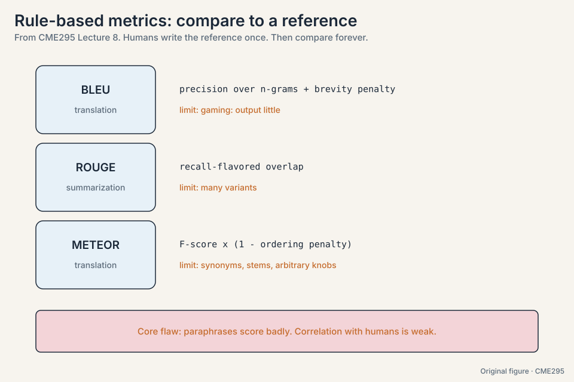
Rung 3: LLM-as-a-judge
The lecture’s key method (28:08): use an LLM to grade outputs. Inputs: the prompt, the model response, and the grading criteria. Outputs: a rationale and a score. Two design choices matter:
- Rationale before score (32:15). Like chain-of-thought, externalizing the reasoning first empirically improves the judgment.
- Binary scale (29:36). Pass/fail beats fine-grained scales: easier for the judge, easier for humans to agree on, less noise.
No reference text is needed: the judge brings pretraining knowledge. Parsing is guaranteed with structured output (34:40): constrained decoding (Lecture 3) forces the rationale-plus-score shape. Two modes exist: single-response grading (good or bad?) and pairwise (A better or B?), the latter generating synthetic preference labels for reward-model training (Lecture 5’s data, made by machines).
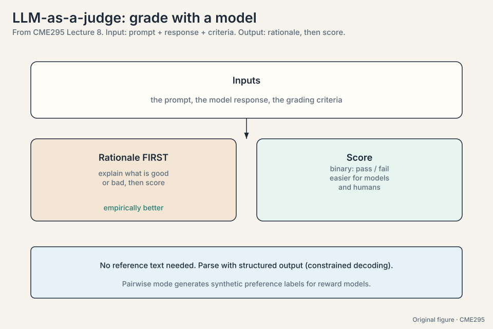
Three biases to watch, none exhaustive. Each demonstrated:
- Position bias (38:48). The judge prefers whichever answer came first. The toy: A and B graded as (A, B) gives “A wins”. Graded as (B, A) gives “B wins”. Same answers, opposite verdicts. Fix: ask both orders, take the majority.
- Verbosity bias (40:31). The judge prefers longer answers. The toy: a 40-word correct-ish answer beats a 10-word correct answer, because length reads as thoroughness. Fix: say so in the guidelines, show counter-examples, or penalize length.
- Self-enhancement bias (42:29). The judge prefers its own outputs: they look like what it would produce, which it already believes is good. Fix: use a different model as judge, ideally a bigger one with strong reasoning.
Best practices: crisp guidelines, binary scale, rationale first, bias mitigations, low temperature (0.1-0.2) for reproducibility (51:24), and calibration against human ratings. The judge is a proxy for human judgment: do not overoptimize the proxy until it diverges from the truth.
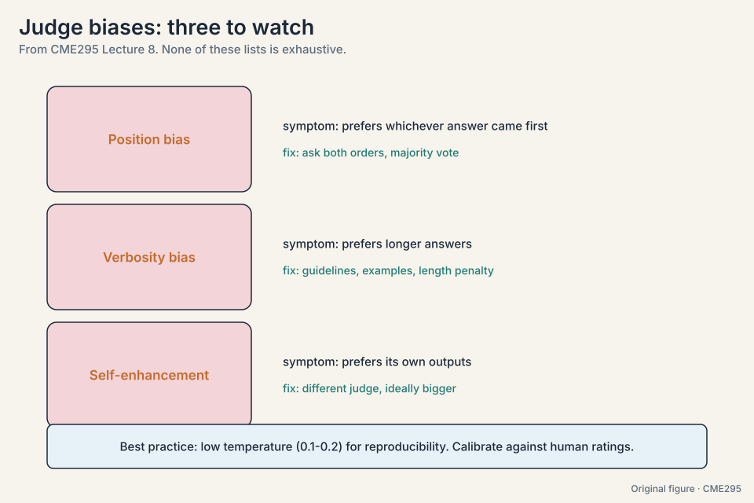
Subchapter: the judge pipeline, end to end
From rubric to calibrated score, the production pipeline:
- Rubric. Crisp guidelines with worked examples (same discipline as human rating).
- Prompt. Prompt + response + criteria. Rationale before score. Binary scale. Structured output for the parse.
- Sampling. Temperature 0.1-0.2 for reproducibility. Multiple samples for close calls.
- Bias controls. Both orders for pairwise (position), length guidance or penalty (verbosity), a different model family as judge (self-enhancement).
- Calibration. Score 200-500 items with humans too. Measure judge-human agreement (kappa on binary verdicts). Below ~0.7: fix the rubric or the prompt.
- Monitor. Re-calibrate on a rolling sample. Judges drift as models update: the judge is software, version it.
The pipeline is judge-at-scale plus human-at-the-margin. The human sample is not optional: an uncalibrated judge is a random number generator with good grammar.
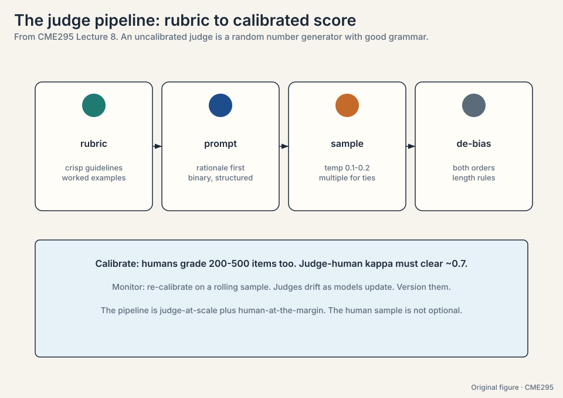
Subchapter: pairwise judging and Elo, worked
Pairwise judging (A vs B) generates win/loss data. Elo turns wins into ratings. The toy: model A rated 1200, model B rated 1000. Expected score for A: 1/(1 + 10^((1000-1200)/400)) = 1/(1 + 10^(-0.5)) = 1/1.316 = 0.76. A wins: new rating = 1200 + K(1 - 0.76), K = 32: 1207.7. B falls symmetrically. A 200-point gap means ~76% expected win rate. Bradley-Terry* is the statistical sibling: it models P(A beats B) = sigma(r_A - r_B) and fits the ratings by maximum likelihood. Chatbot Arena runs this at scale: millions of human pairwise votes, Elo/BT ratings, a live leaderboard. The interview line: “Elo converts votes to skill. Bradley-Terry is how you fit it.”
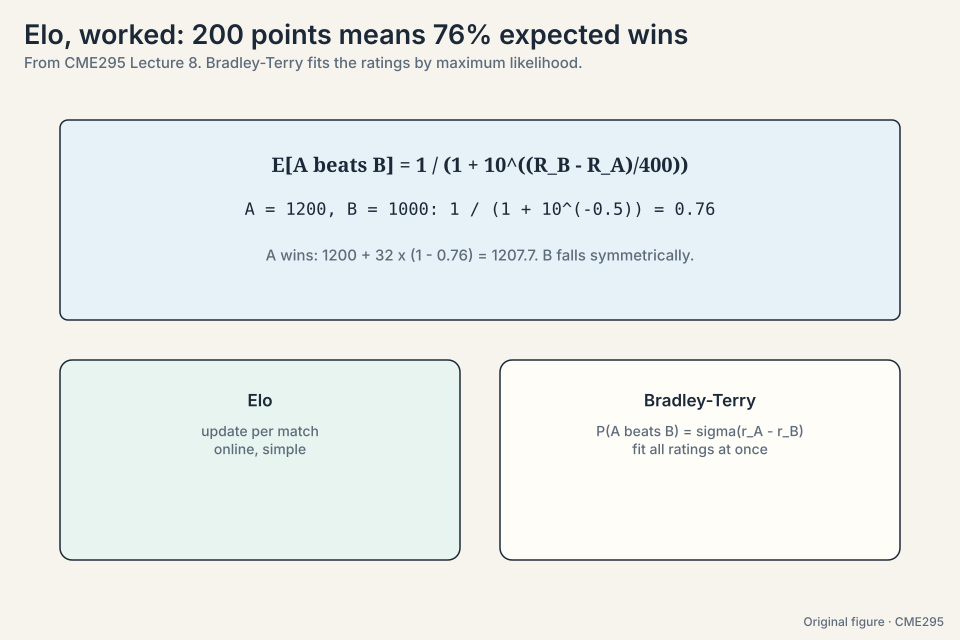
Inputs: the user prompt, the model’s response, and the grading criteria (say: correctness, with two worked examples). The judge prompt asks for rationale first, then a binary pass/fail, as structured output. Sample at temperature 0.1. The judge writes its reasoning, then the verdict. For pairwise: run both orders (A,B) and (B,A) to kill position bias, take the majority. Log the rationale: it is the audit trail. Then calibrate: humans grade a sample, and judge-human kappa must clear ~0.7 or the pipeline is decorative. The rubric or the prompt is wrong for that category, not the judge’s intelligence. Add worked examples of the disagreement cases to the criteria, re-run calibration. If it persists, that category goes back to humans: judges have blind spots, and the pipeline must admit it.
Self-enhancement bias: a model rates its own outputs higher because they look like what it would produce, which it already believes is good. A separate judge breaks the loop. Bigger and stronger-reasoning judges resist being fooled by fluent-but-wrong answers. Cost. The judge screens everything cheaply. Humans audit a sample and calibrate the judge. The pipeline is judge-at-scale plus human-at-the-margin, not either alone.
Factuality, fact by fact
Factuality resists binary grading: a paragraph can be mostly right with two errors. The lecture’s method: decompose, check, aggregate.
- Extract. One LLM call turns the text into a list of atomic facts (56:23).
- Check each. Binary verdict per fact, using RAG or web search against a knowledge base (Lecture 7’s machinery, reused).
- Aggregate. Weighted mean over facts. Weights alpha_i capture importance.
The example (54:23): “Teddy bears, first created in the 1920s, were named after President Theodore Roosevelt after he proudly wanted to shoot a captured bear.” Work it:
fact 1: teddy bears were first created in the 1920s -> FALSE (it was the 1900s) fact 2: named after President Theodore Roosevelt -> TRUE fact 3: after an incident with a captured bear -> TRUE fact 4: he proudly wanted to shoot it -> FALSE (he refused) weights: [0.2, 0.3, 0.2, 0.3] score = (0*0.2 + 1*0.3 + 1*0.2 + 0*0.3) / (0.2+0.3+0.2+0.3) = 0.5 / 1.0 = 0.5
The lecture’s worked score on this passage is 0.6 with its own weighting. The mechanism is the same either way: nuance without hand-waving, two of four facts wrong, caught individually.
Subchapter: FActScore, the atomic-fact standard
FActScore (Min et al., 2023) standardizes the lecture’s method: decompose a long-form answer into atomic facts, verify each against Wikipedia, report the fraction supported. The design decisions: atomic means one claim per fact (no conjunctions to hide behind). Supported means the knowledge source entails it, judged by a model plus human audit. The metric punishes the two classic sins: long answers full of filler (more facts, more chances to err) and confident hallucinations. The limit: the knowledge source is the ceiling. Facts newer than Wikipedia, or outside it, cannot score. The interview line: “FActScore is precision over atomic facts, with Wikipedia as the ground truth.”
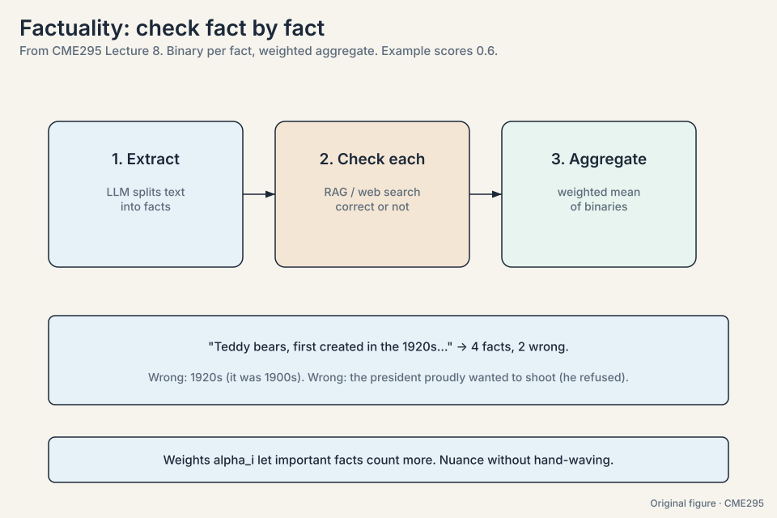
Evaluating agents
Agents fail at three stages, seven ways (Lecture 7’s taxonomy, applied as an evaluation lens):
Prediction: the punt (needed a tool, did not call one,
63:19), tool
hallucination (called find_bear instead of find_teddy_bear,
66:37), wrong
tool, wrong arguments. Execution: buggy tool output, or no output
at all: for actions, silence invites false confirmation, so return
even an empty JSON
(77:57) rather
than nothing. Synthesis: the model fails to use a good tool
result.
The evaluation lesson: categorize failures methodically and fix them in groups. One-off debugging does not scale. Taxonomies do.
Subchapter: pass-hat@k, worked
tau-bench (tool-agent-user) is a benchmark for tool-using agents. tau-bench’s metric: the probability that all k attempts succeed. The toy: per-attempt success probability p = 0.8, independent. pass-hat@2 = 0.8^2 = 0.64. pass-hat@5 = 0.8^5 = 0.33. Compare pass@k (Lecture 6): at least one success, 1 - 0.2^2 = 0.96 for k = 2. The two metrics answer different questions: pass@k for “can it ever succeed” (research), pass-hat@k for “does it succeed reliably” (automation). A 0.8 agent looks great on pass@5 (0.999) and unusable on pass-hat@5 (0.33). Automation needs the hat. The decision rule: report pass@k for capability, pass-hat@k for deployment. Never confuse them.
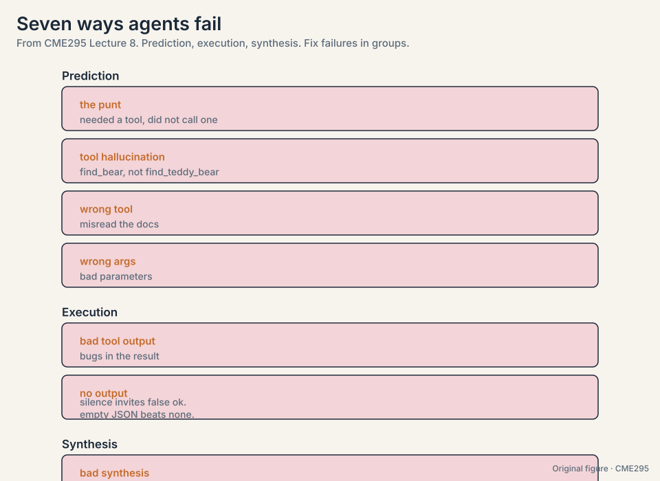
The benchmark families
Five families cover what benchmarks actually test:
- Knowledge: MMLU (85:12, Massive Multitask Language Understanding). ~60 tasks across law, medicine, and everyday topics, four-choice questions. Measures how well pretraining stuck. Answer extraction is hard-coded: output the letter.
- Reasoning: AIME and PIQA. AIME (89:41): hard high-school math with integer answers, LLM-friendly by construction. PIQA (91:06, Physical Interaction QA): 20k two-choice common-sense questions about the physical world (the hairnet vacuum example).
- Coding: SWE-bench (94:12). Real GitHub issues from popular Python repos, with the tests from the fixing PR. The model writes a patch. Tests before and after decide. Test-driven development as a benchmark.
- Safety: HarmBench (98:07). Standard, copyright, contextual, and multimodal harm categories. A trained classifier judges attempts, and an attempt counts if the model tries, even if it fails from low capability. Provider policies differ, so safety numbers do not compare across labs the way accuracy does.
- Agents: tau-bench (101:11, tool-agent-user). Airline and retail domains with tools, policies, and tasks. An LLM simulates the user. Success is measured on database state. The metric is pass-hat@k (103:46): the probability that all k attempts succeed, because automation needs reliability, not luck.
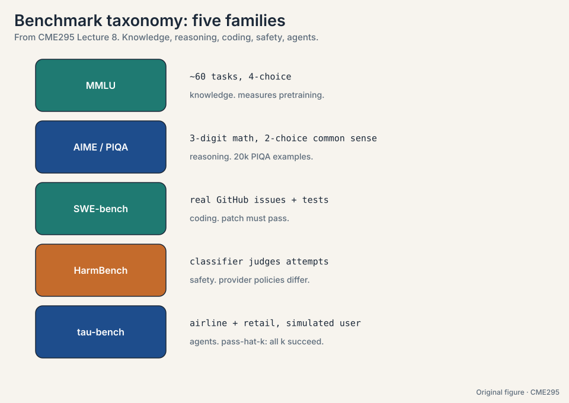
Constrained formats dominate: multiple choice, integer answers, test suites. Free-form plus LLM-judge adds a second error layer, so benchmark designers avoid it where they can.
Subchapter: SWE-bench, worked
The task: a real GitHub issue from a popular Python repo. The model writes a patch. Grading is test-driven:
- FAIL_TO_PASS: tests that failed before the patch and must pass after. The issue is fixed.
- PASS_TO_PASS: tests that passed before and must still pass. Nothing broke.
Both must hold. The toy: issue #452, “divide by zero on empty input”. The model’s patch adds a guard. FAIL_TO_PASS: test_empty_input now passes. PASS_TO_PASS: the other 47 tests still pass. Score: 1. The benchmark’s hardness comes from reality: real issues, real repos, real test suites. The 2026 reality: frontier models score 60-80% on SWE-bench Verified, and the benchmark is saturated enough that harder variants (SWE-bench Multimodal, SWE-Lancer) carry the signal now.
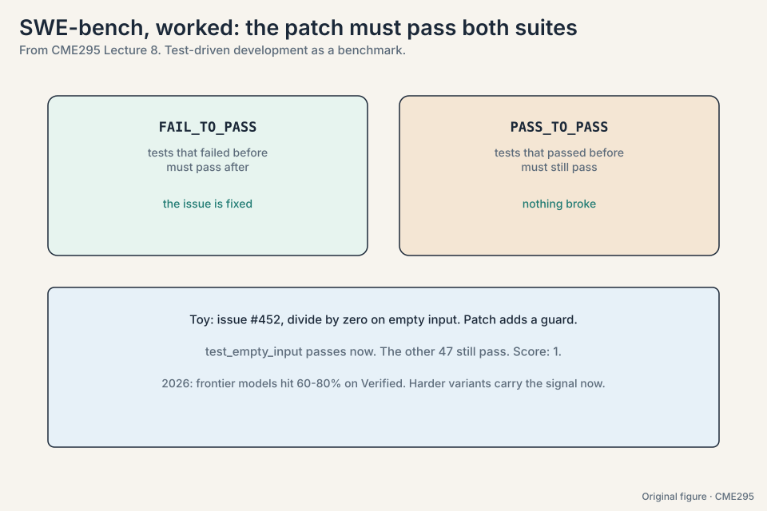
Start from SWE-bench’s design: real issues, test-driven grading. But code review is not patch-writing: the output is comments, not code. So: build a custom set of PRs with known bugs, grade on bug-detection recall (did it flag the real bug?) and false-positive rate (did it cry wolf?). Add an LLM-judge rung for comment quality, calibrated against senior engineers (kappa ~0.7). The decision rule: borrow the benchmark’s grading discipline (deterministic where possible), not its task. Hold out the test set, rotate fresh PRs quarterly, and check for contamination (canary strings in the eval data, searched in training corpora). A static eval is a future training set.
To remove the judge as an error source. An LLM judge is itself imperfect and biased, so free-form benchmarks stack two uncertainties: the model’s and the judge’s. Multiple choice, exact integers, and test suites give hard-coded extraction and deterministic scoring. Yes, deliberately. Benchmarks trade realism for comparability. That is why the lecture pairs them with Chatbot Arena (realistic, noisy) and personal testing (realistic, specific). One leg never stands.
Reading results like an adult
Benchmarks profile a model. They do not crown one. Four cautions:
- Pareto frontier (107:36). Plot performance against price (or safety, or context length). The toy: model A scores 80 at $1 per million tokens. Model B scores 76 at $0.10 per million. B is 10x cheaper for 95% of the quality: B sits on the frontier, A does not, for cost-sensitive use. The frontier is the set of best-per-dollar models. The lecturer’s personal picks (Sonnet for code, Gemini Flash for cheap-and-fast) are personal, not universal.
- Contamination (107:49). Benchmarks leak into training data. Defenses: hashes, blocklists, fresh tests the model cannot have seen.
- Goodhart’s law (108:26). “When a measure becomes a target, it ceases to be a good measure.” Optimized benchmarks stop measuring.
- Try it yourself. Chatbot Arena adds real-usage signal, but the final test is your own tasks on your own data.
Subchapter: the contamination defense stack
Four layers, cheapest first:
- Canary strings. Embed a unique hash in the benchmark. Search training corpora for it. Found: contaminated.
- Blocklists. Exclude known benchmark URLs and datasets from the crawl. Cheap, incomplete (paraphrases slip through).
- Fresh tests. Write the test set after the model’s cutoff. The model cannot have seen what did not exist. The gold standard, and the reason benchmarks now version by date.
- Dynamic benchmarks. Generate fresh items per evaluation (templates, paraphrase engines). Contamination becomes impossible in principle, at the cost of comparability across runs.
The 2026 norm: any benchmark without a contamination report is decorative. Read the report before the score.
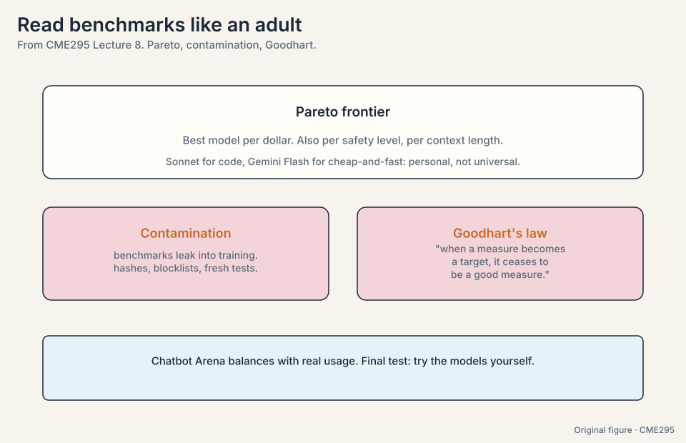
Ask four questions. One: contamination report? A two-year-old benchmark postdates no frontier cutoff: assume leakage until proven otherwise. Two: which split? Test, not validation. Three: what changed vs the reference implementation? Decoding settings, few-shot count, and cherry-picked subsets all inflate scores. Four: what does your own task show? Run your data. The decision rule: trust the vendor’s number exactly as far as the contamination report and your own replication. Treat the number as an upper bound, not a measurement. Run a fresh probe: new questions in the same style, written after their cutoff. The gap between the reported 95% and your probe is the contamination discount.
Mapping back: each rung answers the previous rung’s flaw
| Rung | Fixes | Introduces |
|---|---|---|
| Human ratings | Ground truth, the ideal | Subjectivity and cost. Agreement rate lies (0.85 can be 0.70 or 0.17 kappa) |
| Rule metrics | Cheap, deterministic | Paraphrase blindness: the BLEU toy scores 0.39 on a good answer. Perfect paraphrases score near zero |
| LLM-as-a-judge | Scales, no references | Position, verbosity, self-enhancement biases. Each demonstrated, each with a fix |
| Factuality decomposition | Binary grading is too blunt | Extraction and checking are themselves LLM steps with error |
| Benchmark families | Comparability | Constrained formats trade realism for determinism |
| Adult reading | Numbers that crown | Pareto, contamination, Goodhart: profile, do not crown |
The honest price
Every rung is a proxy, and every proxy has a price. Humans are truthful and unaffordable. Rules are cheap and blind. Judges scale and are biased. Benchmarks compare and distort. The lecture’s honest position: use all of them, trust none of them alone, and keep a human at the margin calibrating the judge. The moment you overoptimize any proxy, Goodhart collects.
Recap: the whole lesson on one screen
The story in eight steps. Each step answers the one before it.
- Evaluation means output quality. Free-form text resists measurement. The lecture climbs a ladder of approximations.
- Humans are ideal but unaffordable. Subjective and slow. The agreement rate lies: observed 0.85 is kappa 0.70 at balanced base rates and 0.17 at 90/10. Chance-correct with kappa, Fleiss, Krippendorff. Fix the rubric when kappa drops.
- Rule metrics compare to a reference. BLEU: precision plus brevity penalty (the toy scores 0.39). ROUGE: recall-flavored. METEOR: F-score with ordering penalty. All punish paraphrase and correlate weakly with humans.
- Let an LLM grade. Prompt plus response plus criteria in. rationale then score out. Binary pass/fail. Structured output guarantees the parse. Pairwise mode makes synthetic preference labels.
- Judges are biased. Correct them. Position: both orders, take the majority. Verbosity: guidelines, counter-examples, length penalty. Self-enhancement: a different, bigger judge. Low temperature (0.1-0.2). Calibrate against humans.
- Check factuality fact by fact. Extract atomic facts, verify each binary with RAG or search, aggregate with importance weights. Two of four facts wrong, caught individually.
- Five benchmark families. MMLU for knowledge, AIME/PIQA for reasoning, SWE-bench for coding, HarmBench for safety, tau-bench for agents with pass-hat@k (all k must succeed).
- Read numbers like an adult. Pareto: best per dollar. 10x cheaper at 95% quality sits on the frontier. Contamination: hashes, blocklists, fresh tests. Goodhart: optimized measures stop measuring. Then try the models yourself.
Go deeper
- Lecture 8 recording: https://www.youtube.com/watch?v=8fNP4N46RRo
- RLHF vs DPO, LLM-as-judge biases (AI Engineer Masterclass): https://www.youtube.com/watch?v=DZf-ZrcmNcI
- Zheng et al., LLM-as-a-Judge: https://arxiv.org/abs/2306.05685
- Jimenez et al., SWE-bench: https://arxiv.org/abs/2310.06770
- Min et al., FActScore: https://arxiv.org/abs/2305.14251
Official sources and further reading
Official: - Lecture 8 recording (YouTube): timestamped above. - Lecture 8 slides (PDF), CME295 Autumn 2025. - Zheng et al., “LLM-as-a-Judge” (2023): - MT-Bench and Chatbot Arena. - Jimenez et al., “SWE-bench” (2023): - issues plus tests.
Further reading: - Banerjee and Lavie, “METEOR” (2005). - Papineni et al., “BLEU” (2002). Lin, “ROUGE” (2004). - Cohen (1960): kappa. - Fleiss (1971) - Krippendorff (2004). - Mazeika et al., “HarmBench” (2024). - Tau-bench authors (2024). - Min et al., “FActScore” (2023): atomic-fact factuality checking.
Caveats from these sources. Judge biases listed are not exhaustive. The lecture says so explicitly. HarmBench’s classifier judge can itself err. Safety benchmarks encode provider policies, so cross-lab comparison is limited. tau-bench’s simulated user is itself an LLM.
Connections to the other courses
- CS336 L12: evaluation: perplexity, benchmarks, and contamination at systems depth.
- CS224N L11: evaluation from the NLP side.
- CME295 L05: pairwise judging as synthetic preference data.
- CME295 L06: reasoning benchmarks (AIME, HumanEval) as verifiable rewards.
- CME295 L07: agent failure modes meet their evaluation here.
Sources
- VIDEOLecture 8 slides (PDF), CME295 Autumn 2025
- PAPERZheng et al., Judging LLM-as-a-Judge with MT-Bench and Chatbot Arena (2023)
- PAPERJimenez et al., SWE-bench: Can Language Models Resolve Real-World GitHub Issues? (2023)